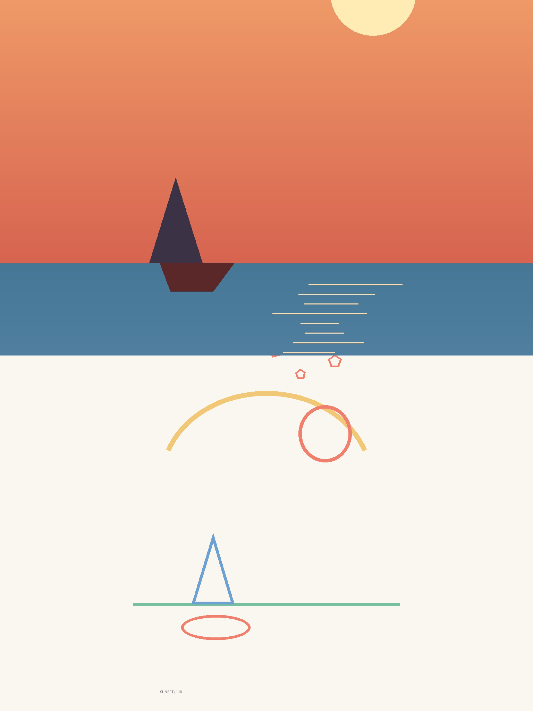

推主小小东（GitHub: nevertoday）把自己摸索出的 54 种"转绘"风格提示词，每种打包成一个标准 Agent Skill，共 56 个开源仓库（每个仓库 = 一个 Skill，编号 xxd-panel-NNN，类似 xxd-panel-116、xxd-panel-224），并配上一个"将军"中控角色统一管理——这就是推文说的事情。
这些仓库不是代码库，而是"给 AI 看图说话的风格配方库"：每个仓库把一段精炼的中文美学提示词（"美学宪法"）+ 一套统一交付规则（"军规"）+ 3 个 Python 工具脚本，装进 SKILL.md 标准格式里。
| 实测样例（本次克隆了 3 个代表） | 风格 | Star |
|---|---|---|
| xxd-panel-116 | 浅纸粉彩涂鸦志：照片一半保留，一半转粉彩蜡笔涂鸦 | 40 |
| xxd-panel-224 | 瓷器碎片拼合重构：用瓷片诗意重构主体，瓷白留白 | 8 |
| xxd-panel-133 | 点刻版画：细密点刻 + 同色透明叠印，瑞士式留白 | 7 |
转绘 = 拿一张真实照片当"底稿"，让 AI 按指定风格重新演绎它（redraw / restyle）。关键在"保留与重构的对应关系"：不是天马行空地画一张新图，而是先理解照片里最值得记住的主体、结构、情绪，再用风格语言重构它，让人一眼看出"这就是刚才那张照片"。
普通 AI 生图是"从一句话开始想象"；转绘是"从一张照片开始翻译"——照片负责"画什么"，风格提示词负责"怎么画"。
实测 116 号的"美学宪法"开头即写明：上半保留原始照片，下半"先理解原照片最值得被记住的核心主题、主体关系、结构走势、情绪与视觉隐喻，再重构为复古纸张肌理的粉彩蜡笔涂鸦插画"。
我们知识库已学过 [[AgentSkills技能包]]：Skill 是"菜谱卡片"，一条命令安装后 AI 按需加载。这里把提示词 Skill 化的收益非常具体：
| 散装提示词（复制粘贴） | Skill 化（本项目的做法） |
|---|---|
| 每次翻聊天记录找提示词 | $xxd-panel-116 photo.jpg 一句话调用 |
| 参数全靠口头交代，容易漏 | --mode --size --text --locale 标准化参数 |
| 风格会被 AI"自由发挥"改写 | 权威边界写死：宪法原文逐字进请求，禁止概括 |
| 批量处理要自己写循环 | 目录批处理、四端壁纸是内置军规 |
| 好不好看全靠肉眼 | 50:50 缝线有确定性脚本审计（见 Q8） |
一句话：散装提示词是"一段会被遗忘和篡改的话"，Skill 化后是"一支有编制、有军规、有质检的部队"。
这是本项目最精妙的设计，仓库文档里写得明明白白：每个编号 Panel 自称 Soldier（士兵），而 soldier-runtime.md 开头第一句就是"这是每个编号 Soldier 的家族运行时契约，逐字复制进每个士兵"。推文的"将军"则是用户侧的中控 Agent 角色——负责派活、验收、管理整个军团。
好处：新增第 57 种风格 = 写一份新宪法 + 复用全部军规，将军的调度逻辑一行不用改。这与我们学过的 [[角色提示]] 一脉相承：换一份"岗位说明书"就换一个士兵，但组织纪律不变。
以 116 号实测为例（37MB，含 8 张示例图）：
xxd-panel-116/ ├── SKILL.md # 岗位说明书：frontmatter(name/description) + 交付要求 ├── agents/openai.yaml # 给 OpenAI 系 Agent 的注册卡（可隐式调用） ├── references/ │ ├── original-prompt/zh-CN.md # ★美学宪法：运行时逐字读取，禁止概括/翻译/替换 │ ├── soldier-runtime.md # ★军规：388 行，参数/批量/审计/验收全在这 │ ├── xxd-panel-116-prompt.zh-CN.md # 交付适配说明 │ ├── runtime-preferences.md # 偏好记忆怎么用 │ └── sample-workflow.md # 示例图维护流程（非运行时依赖） ├── scripts/ │ ├── compose_panel.py # 本地确定性排版/缝线审计（纯 Pillow） │ ├── panel_preferences.py # 交付偏好记忆（存 JSON） │ └── configured_imagegen.py # 图像路由桥（只输出消毒结果） └── assets/examples/ # 8 张官方示例成品图
入口极小、主体待命：SKILL.md 仅 21 行，只指路不讲课——这正是我们学过的 [[分层按需加载]]：小入口常驻上下文，388 行军规和宪法在要干活前才完整读入。
军规用一整节"Authority boundary（权威边界）"把权力划死，这是防 AI"自由发挥"的关键设计：
组装顺序也写死了（军规原文）：宪法全文 → 通用交付前言 → 恰好一个模式块 → 恰好一个文字块 → 用户额外要求。生成前还要自检"提示词里必须恰好有一个 OUTPUT MODE: 行"。审美与物流分离、原文与运行时分离——这就是为什么同一套军规能配 56 份不同的宪法。
| 模式 | 画面 | 典型用途 |
|---|---|---|
top-bottom | 上 50% 原照，下 50% 设计，严格对半 | 前后对照展示 |
left-right | 左 50% 原照，右 50% 设计 | 横版对照展示 |
design-only | 整张都是风格化设计，原照仅作隐形参考 | 直接出成品海报 |
wallpaper-pack | 一次出手机/iPad/电脑/手表 4 张壁纸 | 壁纸套装 |
比例支持 1:1 3:4 4:3 9:16 16:9 21:9 等 12 种或直接给像素；文字三选一：模型按宪法生成 / 用户逐字锁定 / 无文字。目录当输入即为批量意图，军规要求先清点再逐个隔离生成（每张独立读宪法，绝不串味）。
对照模式的核心承诺是"严格 50:50"，但生图模型常常画成 48:52 之类。军规给的答案不是"要求模型画准点"，而是写一个确定性脚本当裁判：compose_panel.py --audit 沿中轴扫描每一行的灰度跳变，找到"缝线"位置，算出它偏离中点的百分比，<0.25% 判 OK，否则判 OFF 并建议"分两张生成再拼"。
这正是我们学过的 [[质检Gate与自我纠错循环]] + [[确定性脚本]]：AI 负责创作，确定性脚本负责验收，不合格就回炉。
# 正确的 50:50 合成图：
image 1536x2048 aspect 0.750
exact half y = 1024.0
seam found y = 1024 (axis delta 129.1, page mean 0.4)
offset +0 px = 0.00% of split axis
verdict OK — the split is effectively exact.
# 故意做的 45:55 错位图：
seam found y = 921 (axis delta 96.0, page mean 0.1)
offset -103 px = 5.03% of split axis
verdict OFF — panels are 45.0% / 55.0%, not 50/50.
Regenerate the panels separately and compose them here.

▲ 本次实验真实合成：上=程序生成的日落帆船"照片"，下=程序绘制的粉彩涂鸦风"设计图"（设计图为程序近似，仅作排版材料；真实使用中由生图模型按宪法生成）
每次都问"要哪种模式/比例/文字语言"很烦。panel_preferences.py 把安全的交付偏好（不含原图路径、文案、密钥）存成 JSON，下次先读它，给用户"复用 / 复用并修改 / 全新配置"三条路。实测全流程（Windows 下存 %APPDATA%\xxd-panel\preferences\，用环境变量重定向到实验目录避免污染真实配置）：
$ set XXD_PANEL_PREFS_DIR=exercise\prefs
$ python scripts/panel_preferences.py load
{"status":"missing"} # 第一次：没有记忆
$ python scripts/panel_preferences.py save --modes top-bottom,design-only --sizes 3:4,9:16 --text-mode prompt --locale zh-CN
{"status":"saved","preferences":{"modes":["top-bottom","design-only"],"sizes":["3:4","9:16"],"text_mode":"prompt","locale":"zh-CN"}}
$ python scripts/panel_preferences.py load
{"status":"found","updated_at":"2026-10-02T14:38:03Z","preferences":{...同上...}} # 完整回读
$ python scripts/panel_preferences.py clear
{"status":"cleared"}
士兵自己不画也不会画——它通过 configured_imagegen.py 调用"宿主已配置好的生图路由"（首选 GPT Image 2，也兼容 Seedance / Nano Banana 等）。这个脚本的输出纪律值得单独学习：它只打印消毒后的状态（如 {"ok":false,"reason":"route_not_configured"}），绝不打印提供商名、endpoint、请求头、凭证、提示词原文，禁止跟随重定向、响应限 100MB。实测本机：
$ python scripts/configured_imagegen.py probe
{"ok":false,"phase":"route","reason":"route_not_configured"} # exit=2：本机无 Codex 路由
军规末尾是一整面 Acceptance gate（验收门禁），逐条核对后才许交付，摘其要害：
与我们知识库的 [[质检Gate与自我纠错循环]] 完全同构：AI 生成 → 确定性/清单式检查 → 只重试失败项，绝不"加个新美学理论"去补救。
仓库采用 PolyForm Noncommercial 1.0：个人学习、研究、私人娱乐随便用；商用产品、收费交付、出售访问权不允许，商用需另行取得作者书面许可。想商用某个风格，直接联系小小东谈授权，别侥幸。
# 安装（官方推荐，装到 Agent 的 skills 目录） git clone https://github.com/nevertoday/xxd-panel-116.git npx skills add https://github.com/nevertoday/xxd-panel-116 --skill xxd-panel-116 # 调用示例（README 原文） /xxd-panel-116 photo.jpg --mode top-bottom --size 3:4 --text prompt --locale zh-CN /xxd-panel-116 photo.jpg --mode left-right --size 16:9 --text prompt --locale en-US /xxd-panel-116 ./photos --mode design-only --size auto,3:4 --text prompt --locale ja-JP
安装后重启 Agent 会话，输入 $xxd-panel-116 即可唤起；生图前需先配置好图像路由（见 Q10）。本次学习中"安装到全局 skills 目录"一步因权限策略未执行，需要时可手动跑上面两条命令。
实验目标：不依赖任何生图模型，把 xxd-panel-116 的"排版 + 缝线审计 + 偏好记忆"真实跑一遍。以下命令全部实测通过（Windows 11 + Python 3.14 + Pillow 12.3）。
xxd-panel-116\scripts\ 下出现 3 个 .py。
git clone --depth 1 https://github.com/nevertoday/xxd-panel-116.git✅ 预期结果：目录克隆成功，含 SKILL.md / references / scripts。
exercise\make_test_images.py。
✅ 预期结果：生成 photo.jpg、design.png（各 1536x2048）和一张故意错位的 bad-split.png（45:55）。seam at y = 1024。
python xxd-panel-116/scripts/compose_panel.py --plan --layout top-bottom --source photo.jpg --size 1536x2048 python xxd-panel-116/scripts/compose_panel.py --source photo.jpg --design design.png --out poster-top-bottom.png --layout top-bottom --size 1536x2048✅ 预期结果（实测原文）：
wrote ...poster-top-bottom.png (1536x2048, split exactly 1024/1024)。若素材比例差太多，脚本会警告裁剪比例并提示"extend the background instead of cropping this hard"。python xxd-panel-116/scripts/compose_panel.py --audit poster-top-bottom.png --layout top-bottom --size 1536x2048 python xxd-panel-116/scripts/compose_panel.py --audit bad-split.png --layout top-bottom✅ 预期结果：好图
verdict OK — offset 0.00%；坏图 verdict OFF — panels are 45.0% / 55.0%，并建议"Regenerate the panels separately and compose them here"。set XXD_PANEL_PREFS_DIR=%CD%\prefs python xxd-panel-116/scripts/panel_preferences.py save --modes top-bottom --sizes 3:4 --text-mode prompt --locale zh-CN python xxd-panel-116/scripts/panel_preferences.py load python xxd-panel-116/scripts/configured_imagegen.py probe✅ 预期结果：
save → {"status":"saved",...}；load → {"status":"found",...}；探针在无路由机器上返回 {"ok":false,"phase":"route","reason":"route_not_configured"}（exit=2）——这是正常结果，不是报错。